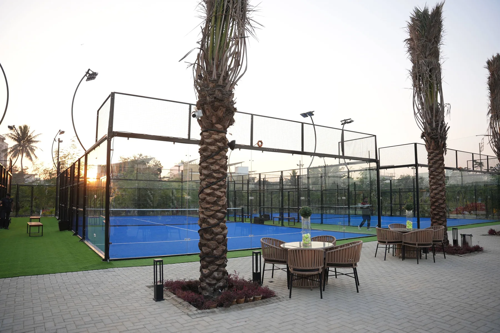

What Happened to Padel in Sweden
Sweden was one of the first countries to adopt padel at scale. Relatively light pandemic restrictions let padel keep running while other sports stopped, and court numbers grew by more than 1,000% during the boom, according to Padel Magazine.
The correction started in 2022. Creditsafe data reported by Bloomberg showed almost 90 padel-related companies filing for bankruptcy in 2023, with some former halls converted into warehouses and discount supermarkets. Swedish broadcaster SVT reported that more than 100 padel facilities closed between 2022 and 2024. The largest operator, We Are Padel, closed around 50 of its Swedish clubs and kept 13, and its owners reported a loss of 716 million kronor for 2022.
The sport itself did not disappear. Sweden still has about 700,000 players and around 4,220 courts.
| Metric | Reported figure | Source |
|---|---|---|
| Padel companies bankrupt, 2023 | Almost 90 | Creditsafe, via Bloomberg |
| Padel facilities closed, 2022–2024 | More than 100 | SVT, via CourtBrain |
| We Are Padel Swedish clubs | About 50 closed, 13 kept | Study Padel |
| Uppsala courts within one year | From 14 to nearly 100 | European Business Magazine |
| Courts still operating | About 4,220 | Study Padel |
| Active players | About 700,000 | Study Padel |
It is "size the club for the demand that remains after the launch peak."
7 Lessons for New Padel Club Investors
1. Do not forecast from a peak
Pandemic demand was real but temporary. Once restrictions eased and people returned to offices, casual players had less free time and filling courts, especially off-peak, became the main problem. Build a scenario where occupancy falls after year one and check that the club still covers its costs.
2. Count every court in your catchment, including planned ones
Uppsala went from 14 courts to nearly 100 in a single year. Before signing a lease, map every existing and announced project within a realistic driving time, not only the clubs already open. See how many padel courts a club needs.
3. Fixed costs break clubs when bookings soften
By 2022 occupancy was falling and operators were struggling with rent and running costs, while higher energy costs and inflation added pressure. A long lease, a heated hall and full lighting create a fixed cost base that does not shrink when demand does. See padel club profitability.
4. Off-peak hours decide profit
Evening peaks fill easily; weekday daytime does not. Plan coaching, leagues, corporate bookings, schools and senior programmes before opening, not after. See the padel club business plan.
5. Scale is not a moat
Industry consultant Carlos Frechilla has said investment funds acquired 300 to 400 clubs before the bubble burst, with losses of around €500 million. The large chains failed first, and the clubs that remain look more like sports clubs than property investments.
6. Compete on experience and community, not price
The Global Padel Report 2026 by Playtomic and Strategy& says the next phase of growth depends on operating quality, occupancy, player experience, loyalty and local community management. The same report finds the global challenge has shifted from building courts to filling them: Chile swung from shortage to surplus and recorded more than 80 club closures. See the padel club amenities guide.
7. Keep the court asset flexible
When Swedish halls closed, the buildings were turned over to other uses. A court fixed to a failed site loses most of its value. Relocatable court systems and foundations that avoid permanent civil works can be moved to a new site or resold. See mobile vs fixed padel courts.
Is Your Market at Risk? Pre-Investment Checklist
- How many courts are open or announced in your catchment?
- What occupancy does your model need to break even, and is it realistic for off-peak hours?
- Is the lease longer than the payback period?
- If bookings drop 20–30%, what share of your costs is still fixed?
- Could the courts be moved or resold if the site underperforms?
- Is demand coming from regular local players or from launch curiosity?
What Survived in Sweden
The market is consolidating: operators with solid finances are acquiring the best locations while the weakest projects gradually disappear. The lesson reaches beyond Sweden. In Spain, a 35-court club in Alcobendas went bankrupt six times before its owner stopped. Size alone does not make a club viable.
Planning a Club? Start With the Numbers
Before ordering courts, work through your business plan, site selection and the RFQ checklist, then send us your project details.
Why Padel Clubs Fail: FAQ
Is padel dead in Sweden?
No. Many operators closed or changed hands, but about 700,000 people still play and around 4,220 courts remain, according to Study Padel.
Why did padel clubs fail in Sweden?
Courts were built faster than lasting demand, often on pandemic-era assumptions, while rent, energy and running costs stayed fixed as occupancy fell.
How many padel companies went bankrupt in Sweden?
Almost 90 padel-related companies filed for bankruptcy in 2023, according to Creditsafe data reported by Bloomberg.
Could a Sweden-style correction happen in the UK or US?
Any local market can be oversupplied if courts are added faster than regular players. Check existing and planned courts in your catchment and test the model against lower off-peak occupancy.
How can a new padel club reduce the risk?
Size the court count to sustainable demand, keep fixed costs flexible, programme off-peak hours and consider relocatable court systems that keep their value if the site changes.
Sources: Bloomberg (Sept 2023); Study Padel; CourtBrain; Padel Magazine; Global Padel Report 2026 (Playtomic & Strategy&).